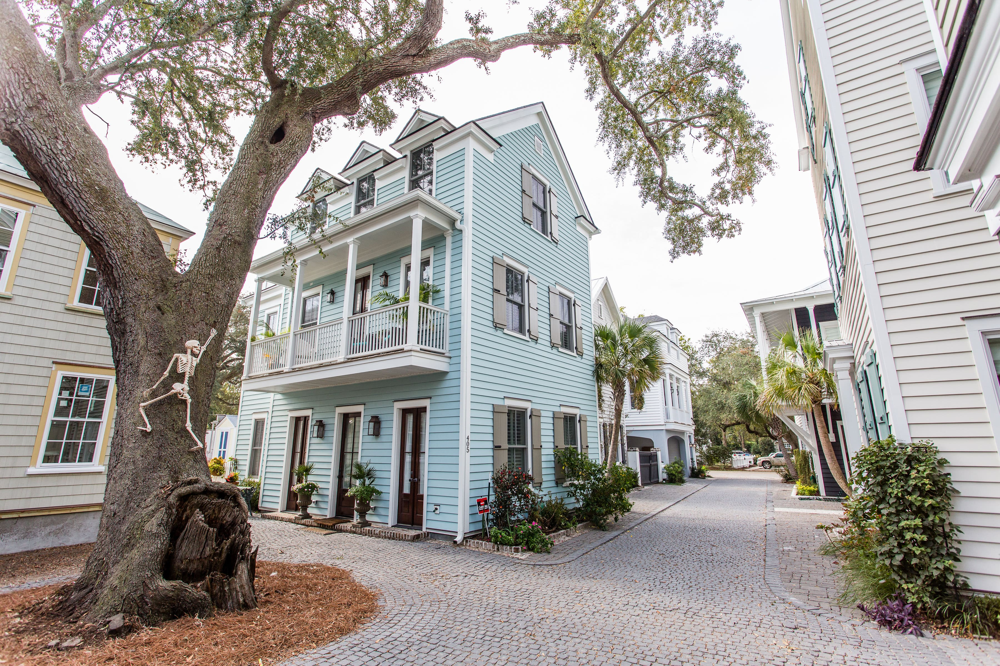
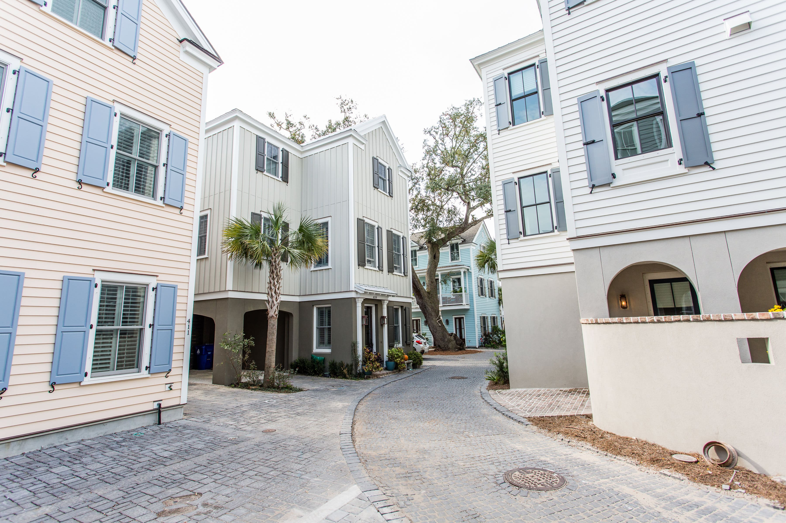
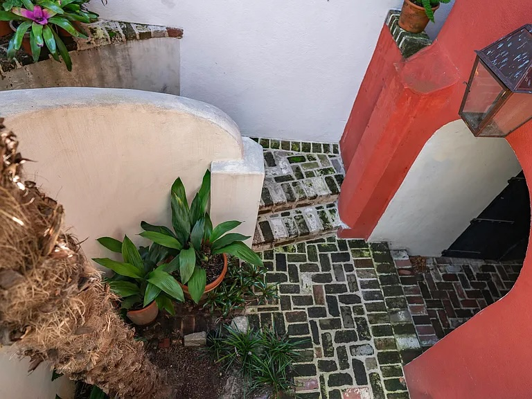
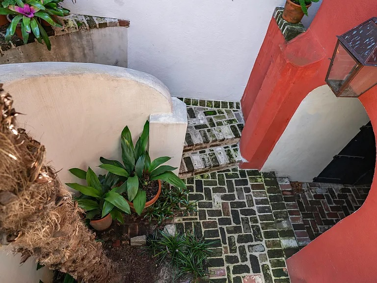

Earl's Court
Thoughtfully designed to integrate new structures into established neighborhoods, Earl's Court exemplifies vision-led execution in urban renovation, enhancing the existing urban fabric through human-scale infill projects.




Morris Square
A signature infill project in Charleston that demonstrates how high-density design can thrive within a historic context while remaining passionate advocates of the human scale design.


Catfiddle Street
Comprised of 24 residential homes on just under an acre of land in the old city of Charleston, Catfiddle Street represents a 21st century version of the time-honored pattern of organic infill growth.

 
